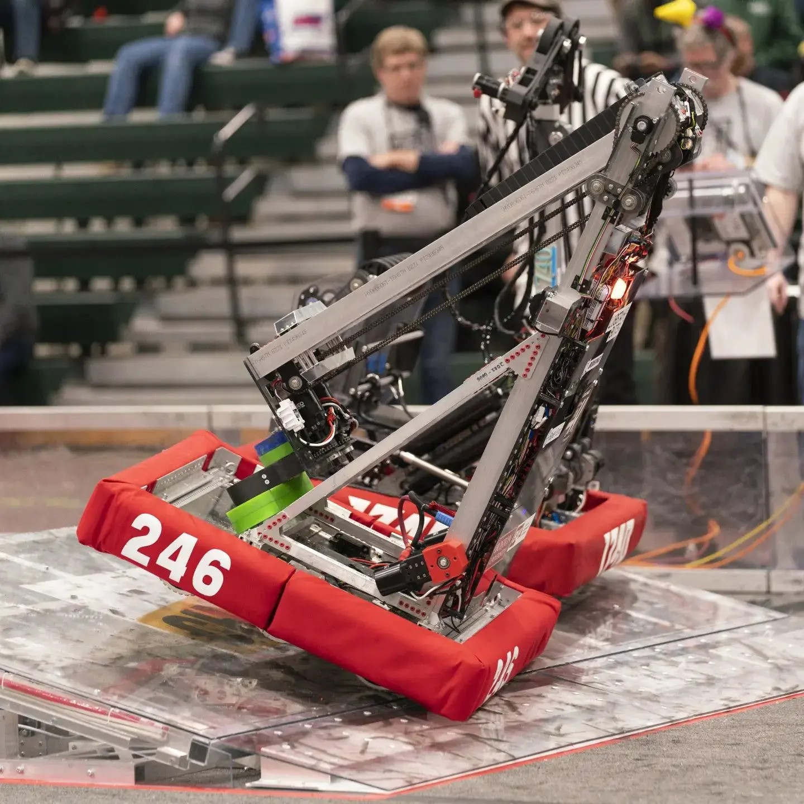

Hey there! I'm Shuhan, a programming enthusiast who loves to dive into code and create innovative solutions. When I'm not busy debugging or working on a new project, you'll probably find me at the gym, working out and staying active. I also have a huge passion for gaming, whether it's exploring new virtual worlds or competing in online tournaments. Always excited to connect with fellow programmers, fitness enthusiasts, and gamers!
Experiences

ShengShu Technology
I am an algorithm engineer intern at the ShengShu Technology. My main project is to repair a wall of acient fisco in China using AI models.
ShengShu Technology is an Artificial intelligence Genertaive Content company. It has its own models and can realize text-to-image or image-to-video.

CASP Lab
I was an assistant researcher at the CASP Lab under BU.
CASP Lab's recent and ongoing work includes system support for streaming and continuous computations, large-scale graph processing systems and graph Machine Learning, and MPC systems for private collaborative analytics.
My research direction is to accrelating the GNN sampling process.
You can find our website here.

Lobstah Bots
I am a mentor on the FRC 246 under Boston University Acedemy.
The FIRST Robotics Competition (FRC) is a global high school event that challenges students to design, build, and compete with robots, fostering skills in engineering, teamwork, and innovation.
You can find us here.
Cambricon
I was a frontend intern engineer responsible for building a visualization of Python data flow charts by utilizing the React Flow framework.
Cambricon is a leading developer of artificial intelligence (AI) chips and processors, aimed at significantly enhancing the efficiency and performance of AI applications across a range of industries.
You can find this project under my GitHub.


{kind=link}
{kind=link}